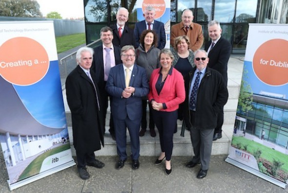
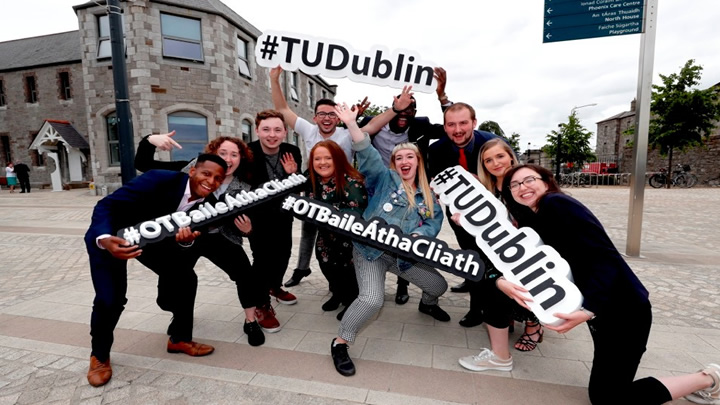

Home
Local Area
History of ITB
Ecology
Personal Stories
Contact ITB
Menu
Welcome to the History of ITB
Take a walk through time with our interactive storytelling.
In 1999 ITB was opened.
Bertie Aheren contributed greatly to the campus and college.
In 2003, the Linc building was opened offically.
Thr first graduations also took place in 2003.
In 2006, the new ITB logo was launched.
In 2009, The Creative Digital Media course was first launched.
ITB also launched its Bebo and Twitter account in order to reach more students and incoming students, especially with the snow fall that year.
In 2009, ITB celebrated its 10th birthday. It celebrated with a community day for the local area and the students.
It also inculded an alumni publication and a reunion for past staff and students.

In 2012, the TU Dublin alliance was first formed. It combined ITB, ITT and DIT.
In March 2018, the Technological Universities Act 2018 was signed into law.
2 weeks after it was signed into law, the alliance submitted an application to become the first technological university for Ireland.

On the 17th of July 2018, the application to become the first technological university for Ireland was succesful.
In January 2019, the Universities will offically become TU Dublin. A new logo and website for the university is set to launch in 2019.